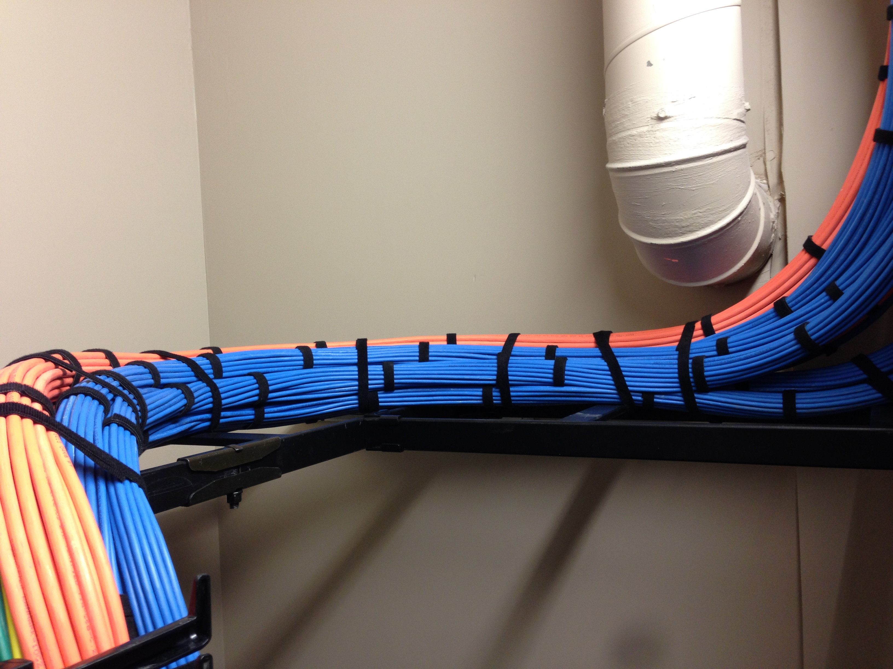
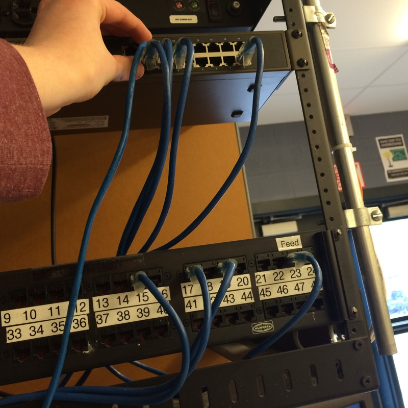
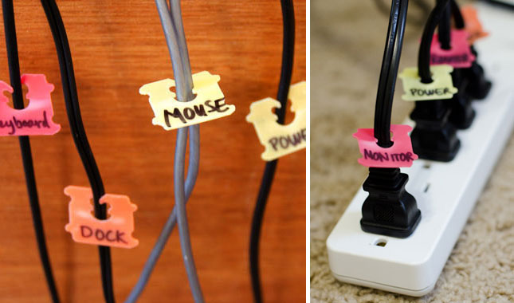
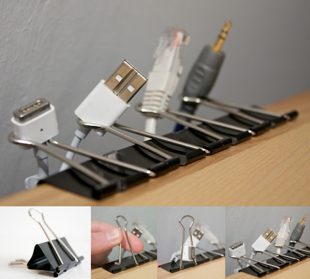

When organizing your cables, make sure they are being held together by something, such as a cable sleeve. These sleeves are useful when organizing cables becasue they prevent all of the wires from getting mixed or tangeled.

Another good tip for keeping your wires organized includes using bread clips. It sounds weird, but it workes great. Just write what the wire goes to on the clip and then put the clip on the wire. This makes it useful for finding differences between cables with the same color. If you want to buy just bread clips, here's 2,500 of them. An alternative if you are a student would be binderclips on tables or desks

Sort the cables below! Be carful though, becasue they can easily get tangled.